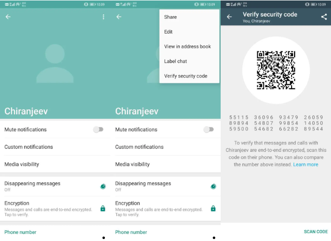
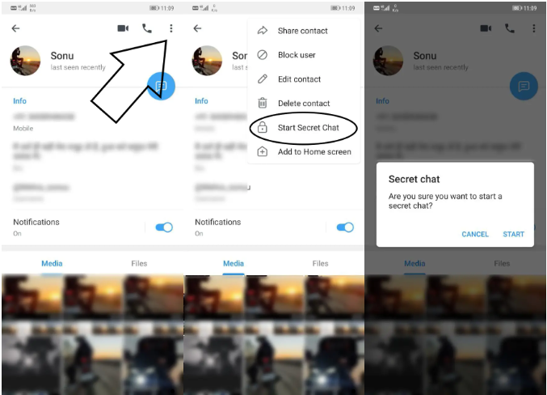
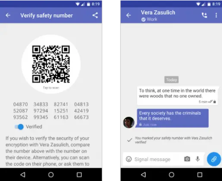
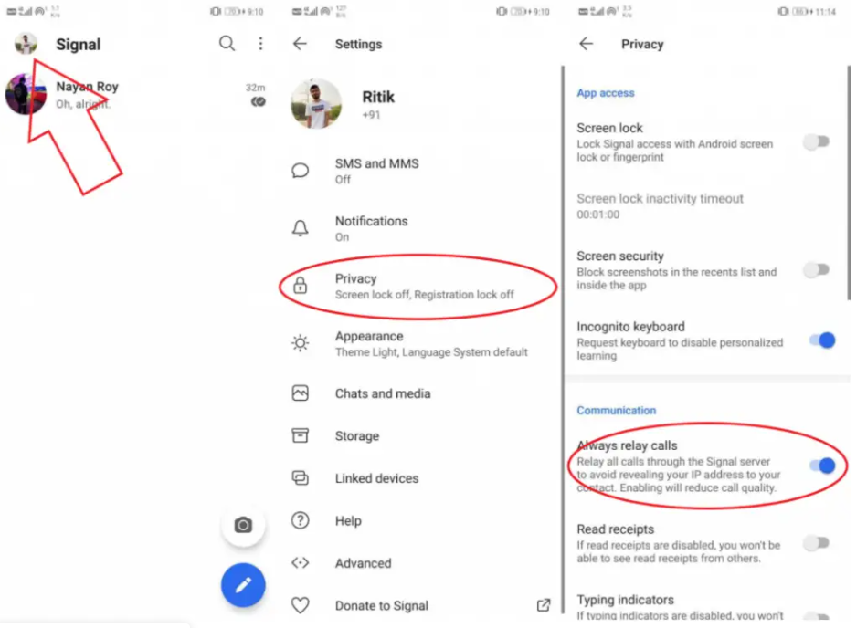

如何在 WhatsApp、Telegram 和 Signal 上秘密聊天
不用说，隐私是许多人在使用 WhatsApp、Telegram 和 Signal 等即时通讯应用时的首要标准。如果您关心自己的隐私，您可能希望在聊天平台上尽可能保密您的聊天内容。在本文中，我们将告诉您如何在 WhatsApp、Telegram 和 Signal Messenger 上秘密聊天。
在 WhatsApp、Telegram 和 Signal 上秘密聊天
WhatsApp、Telegram 和 Signal 是目前最受欢迎的三种消息应用程序，它们具有不同的功能，我们在上一篇文章中对此进行了比较。如果您正在使用其中任何一个，下面介绍了如何在它们上安全地聊天，确保您的隐私不被泄露。
在 WhatsApp 上安全聊天
默认情况下，WhatsApp 对聊天使用端到端加密（于 2016 年推出）。您拨打的每个电话以及您发送的每条文本、照片、视频或音频消息都经过端到端加密，包括群聊。
因此，只有您和与您聊天的人可以读取发送的内容，中间的任何人（甚至 WhatsApp）都无法拦截聊天内容。所有这一切都是自动发生的。您无需打开设置或设置秘密聊天来保护您的消息。
要确认您发送的消息和通话已端到端加密：

在 WhatsApp 上打开聊天。
点击顶部联系人姓名即可打开联系人信息屏幕。
点击 加密。或者单击三点并选择验证安全代码。
您现在将看到二维码和 60 位数字。
如果您和另一位联系人面对面，其中一人可以使用“扫描代码”选项扫描对方的二维码。或者，您可以直观地比较 60 位数字。
相关 - WhatsApp 回答了有关其新隐私政策的 7 个问题
在 Telegram 上安全聊天
Telegram 的情况有所不同。它本身对所有聊天使用服务器客户端加密。然而，它确实为喜欢端到端加密的人提供秘密聊天。
在 Telegram 上开始秘密聊天：

打开您想在 Telegram 上聊天的用户的个人资料。
点击右上角的三个点。
单击“开始秘密聊天”。
将打开一个新的秘密聊天窗口，您可以在其中与其他人私下聊天。
秘密聊天使用端到端加密，不会在 Telegram 服务器上留下任何痕迹。它还具有自毁定时器并且不允许转发。此外，出于隐私原因，人们不能对聊天进行屏幕截图。
为什么 Telegram 默认不提供端到端加密？
Telegram 默认不提供 E2E 功能，以允许在 Telegram 自己的安全云存储中进行聊天备份。此外，使用端到端加密，发送大文件、无需重新上传的即时媒体转发、最小化存储使用、支持多个设备以及访问聊天记录等功能都是不可能的。
那些更喜欢这些功能的安全性和隐私性的人可以选择秘密聊天。
在 Signal Messenger 上安全聊天

与 WhatsApp 类似，Signal 在聊天中强制执行端到端加密。您发送的所有消息、照片、视频以及拨打的电话都会在两端加密。因此，Signal 或任何第三方都无法访问数据。
要与其他联系人验证加密的安全性，请打开聊天，单击顶部的联系人姓名，然后选择验证安全号码。现在，可以从任一设备扫描二维码或比较数字以验证加密。
此外，Signal 还具有专用的中继呼叫功能，可通过 Signal 服务器重新路由您的呼叫。通常，在建立呼叫后，您的 IP 地址可能会泄露给您的联系人。启用中继后，他们只能看到 Signal 的 IP，而看不到您的 IP。
要在 Signal 中启用中继呼叫：

在手机上打开 Signal Messenger。
转到“设置”>“隐私”。
启用中继呼叫切换。
使用密码锁
所有三个应用程序 - Whatsapp、Telegram 和 Signal 都带有内置应用程序锁。您可以使用它们来保护您的聊天免遭其他人未经授权的访问。
要锁定 WhatsApp：前往“设置”>“帐户”>“隐私”>“指纹锁”。启用它。
要锁定 Telegram：前往“设置”>“隐私和安全”>“密码锁定”。启用它。
要锁定 Signal：前往“设置”>“隐私”>“启用屏幕锁定”。